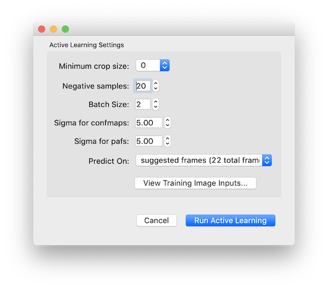
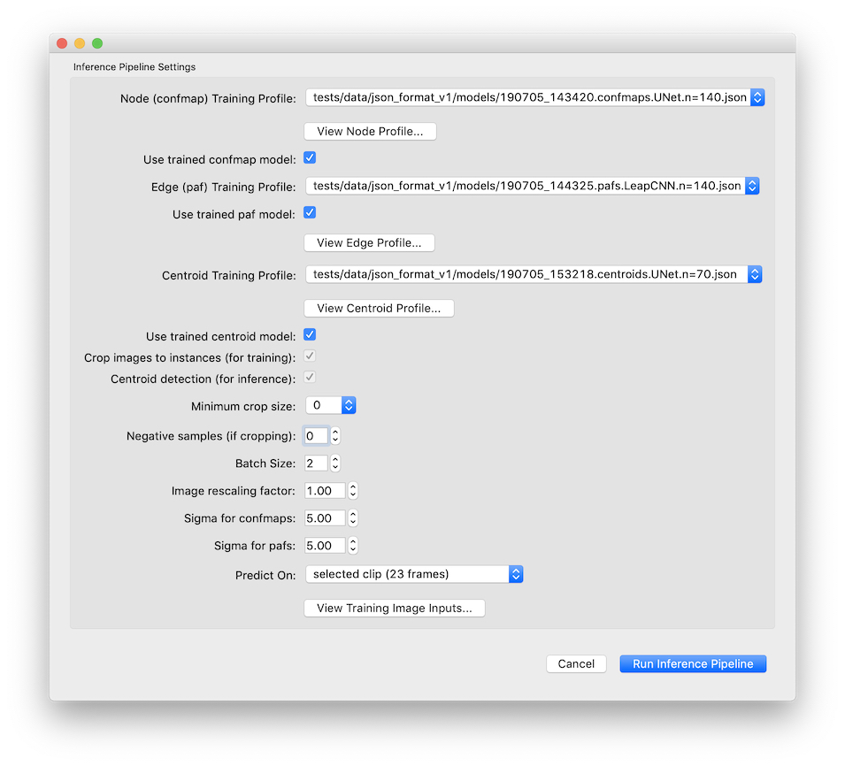
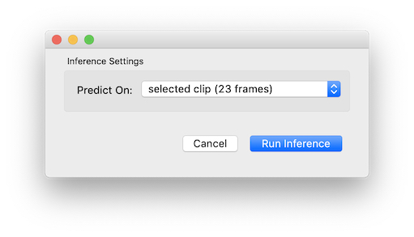

Tutorial¶
Before you can use sLEAP, you’ll need to install it. Follow the instructions at Installation to install sLEAP and start the GUI app.
There are three main stages of using sLEAP:
Creating a project, opening a movie and defining the skeleton;
Labeling and learning, labeling of video frames assisted by network predictions;
Prediction and proofreading, final network predictions of body-part positions and proofreading of track identities in full videos.
Stage 1: Creating a project¶
When you first start sLEAP you’ll see an open dialog. Since you don’t yet have a project to open, click “Cancel” and you’ll be left with a new, empty project.
Opening a video¶
Add a video by clicking the “Add Video” button in the “Videos” panel on the right side of the main window, the “Add Video” command in the “Videos” menu, or the keyboard shortcut.

You’ll then be able to select one or more video files and click “Open”. sLEAP currently supports mp4, avi, and h5 files. For mp4 and avi files, you’ll be asked whether to import the video as grayscale. For h5 files, you’ll be asked the dataset and whether the video is stored with channels first or last.

Creating the Skeleton¶
Create a new skeleton using the “Skeleton” panel on the right side of the main window.
Use the “New node” button to add a node (i.e., joint or body part). Double click the node name to rename it (hit enter after you type the new name). Repeat until you have created all your nodes. You then need to connect the nodes with edges. Directly to the left of the “Add edge” button you’ll see two drop-down menus. Use these to select a pair of nodes, and then click “Add edge”. Repeat until you’ve entered all the edges.

Note: it’s okay to add edges after you’ve already labeled some instances. Any labeled instances will be updated with the new edge. But if you add a new node after labeling instances, there’s currently no way to update your already labeled instances with this node.
Stage 2: Labeling and learning¶
We start by assembling a candidate group of images to label. You can either pick your own frames or let the system suggest a set of frames using the “Generate Suggestions” panel. sLEAP can choose these frames (i) randomly, or using (ii) Strides (evenly spaced samples), (iii) PCA (runs Principle Component Analysis on the images, clusters the images into groups, and uses sample frames from each cluster), or (iv) BRISK (extracts features from each image using key-point detection then runs PCA and clustering).

Labeling the first frame¶
Start by adding an instance of the skeleton to the current image by clicking the “Add Instance” button in the Instances panel, selecting “Add Instance” from the “Labels” menu, or the keyboard shortcut. This first instance will have its points located at random. Move the points to their appropriate positions by dragging with the mouse. Use the mouse scroll-wheel to zoom.

You can move the entire instance by holding down the “Alt” key while you click and drag the instance. You can rotate the instance by using the scroll-wheel while holding down the “Alt” key.
For body parts that are not visible in the frame, right-click the node (or its name) to toggle visibility. The node will appear smaller to show that it’s marked as “not visible”. If you can determine where an occluded node would be in the image, you may label it as “visible” in order to train the model to predict the node even when it’s occluded.

Saving¶
Since this is a new project, you’ll need to select a location and name the first time you save. sLEAP will ask you to save before closing any project that has been changed to avoid losing any work. Note: There is not yet an “undo” feature built into sLEAP. If you want to make temporary changes to a project, use the “Save As…” command first to save a copy of your project.
Labeling more frames¶
After labeling the first frame saving the project, it’s time to label more frames. Nodes positions will be copied from the instances in the prior labeled frame to increase labeling speed. If you generated a list of suggested frames, you can go to the next frame in the labeling set by either:
clicking “Next” under the list of suggested frames
double-clicking one of the suggested frames on the list
selecting “Next Suggestion” from the “Labels” menu
using the keyboard shortcut listed in the “Labels” menu
You can also always pick a frame to label by using the slider bar under the video.
There’s no need to be consistent about which animal you label with which instance for the case of multiple animals. For instance, suppose you have a male and a female. It’s fine to label the male with the blue instance in some frames and the orange instance in others. Tracking (and track proofreading) is the final stage in the workflow and occurs after predicting body part locations.
When you label a frame, it’s best if you can label all the instances of your animal in the frame. Otherwise, the models may learn to not identify things that look like the instances you didn’t label.
Active learning¶
Active learning has two main goals. First, it speeds up the labeling process as it is faster to correct a predicted instance which is mostly correct than it is to add a new instance from scratch. Second, it provides feedback about where your model does well and where it does poorly, and this should give you a better idea of which frames will be most useful to label.
To run active learning, select “Run Active Learning…” from the “Predict” menu. This trains new models using the frames that you’ve already labeled in your project, and then uses these models to predict instances in the suggested frames that you haven’t yet labeled (or on other random frames). This process can take a while, and since it runs on your machine, you should only try it if you have a GPU installed.

Active learning uses the training settings which we’ve found to work well on a wide range of videos. We train a “centroid” model on 1/4 scale images and then use this to crop where we think there are instances during inference. Another pair of models are trained on unscaled, cropped images. The “confidence map” model is used to infer node locations, and the “part affinity field” model is used to infer the edges that connect nodes.
There are a few hyperparameters that you can control for active learning:
Minimum crop size ensures that the box for our crop is at least a given size instead of using the tightest crop that will bound any labeled instance.
Negative samples help the model learn to distinguish instances from the background by including randomly selected crops where there are no labeled instances.
Sigma controls the size of the confidence map gaussians and part affinity fields used for training.
Batch Size determines how many samples are used to train the neural network at one time. If you get an error that your GPU ran out of memory while training, you should try a smaller batch size.
You can visually preview the effects of these settings on the training data by clicking the “View Training Image Inputs…” button. You’ll then see windows with the confidence maps and part affinity fields that will be used to train the models.
After setting the parameters click “Run Active Learning”. During the training process, you’ll see a window where you can monitor the loss. Blue points are training loss for each batch, lines are training and validation loss for the epochs (these won’t appear until the second epoch has finished.) There’s a button to stop training the model when you think is appropriate, or the training will automatically stop if the model doesn’t improve for a certain number of epochs (15 by default)
First we train a model for confidence maps, part affinity fields, and centroids, and then we run inference. The GUI doesn’t yet give you a way to monitor the progress during inference, although you can get more information in the console window from which you started sLEAP.
When active learning finishes, you’ll be told how many instances were predicted. Suggested frames with predicted instances will be marked in red on the seek-bar.
For experts in training neural networks: The “Expert Controls…” command in the “Predict” lets you control many more hyperparameters, as well as defining “training profiles”. You can turn off cropping for training or for inference, and you can adjust image scaling. You can also mix and match models trained at different times. Use at your own risk.

Reviewing and fixing predictions¶
After you’ve successfully trained models and predicted some instances, you’ll get a message that active learning has finished. Every suggested frame with predicted instances will have a distinctive mark in the seek-bar. Suggested frames which you labeled are marked in blue while those with predicted instances are marked in red. Predicted instances will not be used for future model training unless you correct the predictions in the GUI.

Predicted instances in the frame are displayed in grey with yellow nodes. To edit a prediction, you’ll need to replace it with an editable instance. There are a few ways to do this:
double-click the predicted instance and it will be converted into a regular instance
add an instance (by clicking the “Add Instance” button, using the menu command or keyboard shortcut) and it will replace one of the predicted instances with your new instance (it does this in sequence, so the next instance you add will replace a different predicted instance in the frame)
You can now edit the instance as before. Once you’ve added and/or corrected more instances, you can repeat the active learning process: train a new model, predict on more frames, correct those predictions, and so on. You’ll want to regularly generate new frame suggestions, since active learning will return predictions for just these frames.
Stage 3: Tracking instances across frames¶
When you’re satisfied with the predictions you’re getting during active learning, you can use your models to predict on more frames by selecting “Run Inference…” from the “Predict” menu. This will use the most recently trained set of models.

Inference only returns track data if you run it on a continuous range of frames. To do this, select a range of frames in the seek-bar by shift-clicking in the seek-bar and dragging over the desired range (this could be the entire video). The selected frames will be highlighted in light blue in the seek-bar. If a range of frames is selected in the seek-bar, inference will return predictions (with tracks) for that range, rather than returning predictions on the suggested frames.
It’s also possible to run inference using the command line interface (useful if you’re going to run on a cluster). For more details on the command line interface, run
python -m sleap.nn.inference --help
Track proofreading¶
Once you have predicted tracks, you’ll need to proofread these to ensure that the identities of instances across frames are correct. By default, predicted instances all appear in grey and yellow. Select “Color Predicted Instances” to show the tracks in color. (Note that colors in the frame match colors in the seek-bar and colors in the “Instances” panel.) Click an instance to see it’s track name. Double-click the track name in the “Instances” panel to change the name.
There are two main types of mistakes made by the tracking code: mistaken identities and lost identities.
Mistaken Identities: The code may misidentify which instance goes in which track, in which case you’ll want to “swap” the identities.
You can swap the identities assigned to a pair of instances by selecting “Transpose Instance Tracks” in the “Labels” menu. If there are just two instances in the frame, it already knows what it do. If there are more, you’ll have to click the two instances you want to swap.

You can assign an instance to a different (or new) track from the “Set Instance Track” submenu in the “Labels” menu.
You can select instances by typing a number between 1 and 9, by clicking the instance in the frame, or by clicking the instance in the “Instances” panel (on the right side of your main window). When an instance is selected, you’ll see its track name. These track names can be edited by double-clicking the track name in the “Instances” panel.
When you assign an instance to a track, this change will also be applied to all subsequent frames. For instance, if you move an instance from track 3 to track 2, then any instance in track 3 in subsequent frames will also be moved to track 2. This lets you effectively “merge” tracks.
Lost Identities: The code may fail to identity an instance in one frame with any instances from previous frames. In this case, you’ll want to find the first frame in which the new track occurs and change the instance track to the track from previous frames. The “Next Track Spawn Frame” command in the “Labels” menu will take you to the next frame in which a new track is spawned.